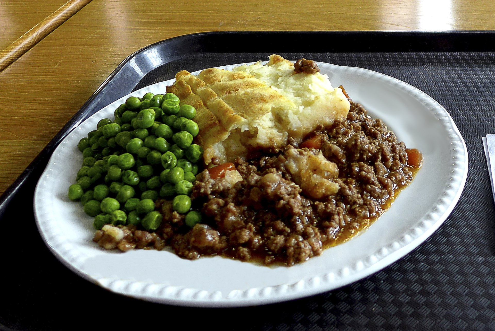

Shepherd's pie

Description
A classic British casserole with ground beef, vegetables, and mashed potatoes
Ingredients
- 3 large potatoes, peeled and quartered
- 1 stick butter, divided
- 1 medium onion, chopped
- 1 to 2 cups of mixed vegetables, like carrots and peas
- 1 1/2 pounds of ground beef
- 1/2 cup of beef broth
- Salt, pepper and other seasonings of choice
Steps
- Boil the potatoes
- Preheat oven to 400F
- Sauté the vegetables
- Add the ground beef, broth and seasoning
- Mash the potatoes
- Layer the meat and vegetables in a dish, add the mashed potatoes on top
- Bake for about 30 minutes